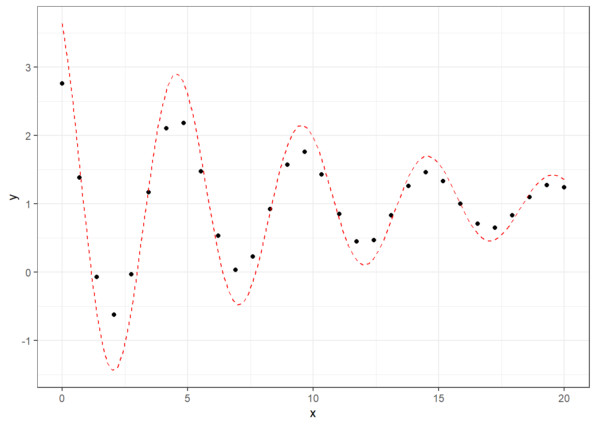
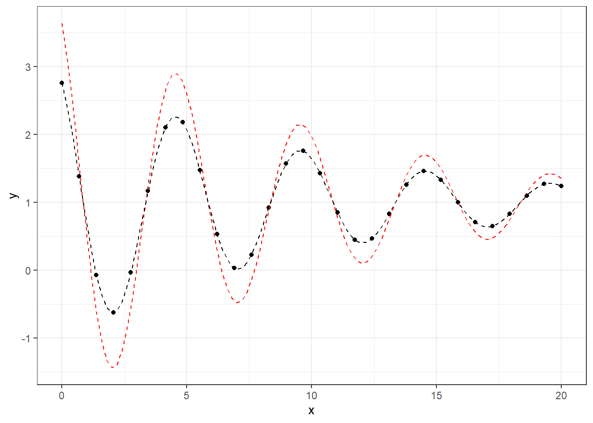

Chapter 4 Applying the LM Algorithm to a Damped Oscillation Model
In this chapter, we’ll walk through how to use the Levenberg-Marquardt (LM) algorithm to fit a damped oscillation model to a set of data. This type of model is often used to represent phenomena like decaying waves or oscillations, where the amplitude decreases over time. The general form of the equation for a damped oscillation is:
\[ y = A \cdot e^{(-\lambda \cdot x)} \cdot \cos(\omega \cdot x + \Phi) + C \]
Where:
- \(A\) is the amplitude (parameter 1, \(\omega_1\))
- \(\lambda\) is the decay rate (parameter 2, \(\omega_2\))
- \(\omega\) is the oscillation frequency (parameter 3, \(\omega_3\))
- \(\Phi\) is the phase shift (parameter 4, \(\omega_4\))
- \(C\) is the vertical offset (parameter 5, \(\omega_5\))
We need to estimate these 5 parameters based on the given data. Let’s see how to do this using the LM algorithm, which helps optimize these parameters. The following libraries are necessary for running R codes:
library(here)
library(tidyverse)
library(gganimate)
library(minpack.lm)
library(numDeriv)
library(MASS)
library(plotly)
library(gridExtra)
library(grid)4.1 Example Data
Here’s the data we’ll be working with.
x <- c(0.0, 0.69, 1.38, 2.07, 2.76, 3.45, 4.14, 4.83, 5.52, 6.21, 6.9, 7.59, 8.28, 8.97, 9.66, 10.34,
11.03, 11.72, 12.41, 13.1, 13.79, 14.48, 15.17, 15.86, 16.55, 17.24, 17.93, 18.62, 19.31, 20.0)To create the corresponding \(y\) values, we’ll use the formula mentioned earlier with certain parameters.
f <- function(w0){
return(w0[1] * exp(-w0[2] * x) * cos(w0[3] * x + w0[4]) + w0[5])
}
w <- c(1.9992035, 0.1002633, 1.2568461, 0.4967924, 0.9992937) # Real parameters
y <- round(f(w), 2)
df_temp <- data.frame(x,y)Now, let’s assume we don’t know these exact parameters but we have some initial guesses for them. For example:
This initial guess will give us a poor fit to the data, as we can see below in the graph:
ggplot(df_temp, aes(x, y)) +
geom_point() +
stat_function(fun = function(x) w0[1] * exp(-w0[2] * x) * cos(w0[3] * x + w0[4]) + w0[5], col = "red", lty = 2) +
theme_bw()
The LM algorithm will help us find the correct parameters that minimize the error between the observed data and the model prediction.
4.2 Data fitting using nlsLM
The nlsLM function in R (available from the minpack.lm package) implements the algorithm. It can optimize parameters in nonlinear least squares problems, like our damped oscillation model.
To use nlsLM, we need to provide:
- The model function,
- The data,
- The initial guesses for the parameters.
Here’s how we do it:
f.do <- function(x, A, Lambda, Omega, Pi, C){ ## to calculate y to use x and parameters
y <- A*exp(-Lambda*x)*cos(Omega*x+Pi)+C
y
}
start <- c(A=w0[1], Lambda = w0[2], Omega=w0[3], Pi=w0[4], C=w0[5])
m <- nlsLM(y ~ f.do(x, A, Lambda, Omega, Pi, C), data = df_temp, start = start)
summary(m)##
## Formula: y ~ f.do(x, A, Lambda, Omega, Pi, C)
##
## Parameters:
## Estimate Std. Error t value Pr(>|t|)
## A 1.9998538 0.0021139 946.1 <2e-16 ***
## Lambda 0.1001776 0.0001714 584.5 <2e-16 ***
## Omega 1.2565776 0.0001783 7048.5 <2e-16 ***
## Pi 0.4980359 0.0010815 460.5 <2e-16 ***
## C 0.9997494 0.0005270 1896.9 <2e-16 ***
## ---
## Signif. codes: 0 '***' 0.001 '**' 0.01 '*' 0.05 '.' 0.1 ' ' 1
##
## Residual standard error: 0.002829 on 25 degrees of freedom
##
## Number of iterations to convergence: 3
## Achieved convergence tolerance: 1.49e-08After running this, the algorithm returns optimized parameters that are very close to the real values we started with. The iteration cycle is just 3 iterations, showing that the algorithm is efficient and quickly finds the best parameters.
The optimized parameters are almost identical to the real values used to generate the data:
## A Lambda Omega Pi C
## 1.9998538 0.1001776 1.2565776 0.4980359 0.9997494Now, we can visualize the result. The optimized parameters (black line) fit the data much better than the initial guess (red line), as shown below:
ggplot(df_temp, aes(x, y)) +
geom_point() +
stat_function(fun = function(x) w0[1] * exp(-w0[2] * x) * cos(w0[3] * x + w0[4]) + w0[5], col = "red", lty = 2) + # Initial guess
stat_function(fun = function(x) n1[1] * exp(-n1[2] * x) * cos(n1[3] * x + n1[4]) + n1[5], col = "black", lty = 2) + # Optimized result
theme_bw()
4.3 How the Algorithm Works
The algorithm is a hybrid method that combines the Gauss-Newton method and gradient descent method. It is used to find the best-fitting parameters for models that involve nonlinear relationships, like our damped oscillation model. Here’s a basic breakdown of how the algorithm works:
Initial Parameters: The algorithm starts with an initial guess for the parameters.
Model Evaluation: The model (i.e., our damped oscillation formula) is evaluated with these initial parameters, and the error between the predicted values and the actual data is calculated (this is usually the chi-squared error).
Jacobian Matrix: The algorithm computes the Jacobian matrix, which describes how sensitive the model is to changes in each parameter.
Adjusting Parameters: Based on the Jacobian and the error, the algorithm updates the parameters to minimize the error. It adjusts the parameters using a mixture of Gauss-Newton (which is fast but can be unstable) and gradient descent (which is slower but more stable).
Convergence: This process is repeated, adjusting the parameters until the error becomes small enough, indicating that the model has converged to the optimal parameter values.
4.4 Custom Implementation of the Algorithm
To understand how the nlsLMfunction works, we can implement a simplified version of the algorithm ourselves in R. Below is a my custom implementation, where we control the damping factor \(\mu\) and adjust it during the iterations.
4.5 Convergence Criteria of the Algorithm
In the algorithm, the goal is to iteratively adjust the model parameters (w) so that the model’s predictions closely match the observed data. The algorithm stops iterating when it meets certain convergence criteria — conditions that indicate the algorithm has found a good solution. These conditions are based on different aspects of the optimization process.
Here are the convergence criteria used in my code:
- Actual and Predicted Relative Reduction in Chi-Squared
The actual relative reduction (ARD) is the change in chi-squared based on the real improvement from the current model to the next model after parameter updates. It’s computed as: \[ \text{actual.relative.reduction} = \frac{\text{previous.chisq} - \text{chisq.new}}{\text{previous.chisq}} \]
Here,
previous.chisqis the chi-squared value from the previous iteration (or from the initial iteration), andchisq.newis the chi-squared value after the parameter update.The ARD tells us how much the chi-squared has improved due to the changes in the model’s parameters.
The predicted relative reduction (PRD) is an estimate of the expected reduction in chi-squared, based on the Jacobian matrix and the model’s current residuals. It is computed as:
\[ \text{predicted.relative.reduction} = \frac{\chi^2(\theta_{old})-\chi^2(\theta_{new})}{|d^T_{k}\cdot(damp \cdot d_k + J^Tr)|} \]
This prediction is made based on the current parameter update and the model’s Jacobian matrix.
It estimates how much the chi-squared is expected to change based on the current step size and damping. In some cases, the predicted reduction can indicate whether a larger or smaller parameter update is required.
To ensure that the algorithm has converged, both ARD and PRD must be below a specified threshold (commonly denoted as
ftol). This signals that further iterations will not yield significant improvements in the fit. The algorithm will terminate when the following conditions are met:Convergence Condition: The algorithm will stop if both the ARD and the PRD are below
ftol: \[ \text{actual.relative.reduction} < \text{ftol} \quad \text{and} \quad p < \text{ftol} \]ftolis a small positive number (e.g., \(1 \times 10^{-6}\)), which sets the tolerance level for the relative decrease in chi-squared. If both the actual and predicted reductions are smaller than this threshold, it indicates that the optimization has plateaued, meaning no significant improvement is expected in subsequent iterations.Why Two Criteria?
- ARD measures how much the chi-squared has decreased in reality after the parameter update. If this value is very small, it means that the model is no longer significantly improving.
- PRD estimates how much the chi-squared is expected to decrease in the next iteration, based on the current model’s residuals and the Jacobian matrix. If the predicted reduction is small, it means that the algorithm expects little improvement, even if it continues.
By comparing both reductions (actual and predicted), the algorithm avoids prematurely stopping when only one of them is small but still allows for stopping when both suggest minimal improvement.
- Relative Error in Parameter Updates (
RE):
- This is the largest relative change in the model parameters (
dk), normalized by the size of the current parameter values (w). - If the changes in the model parameters are very small (below a threshold,
ptol), it means that the parameters have stabilized, and further iterations are unlikely to improve the model significantly.
- Cosine Angles Between Residuals and Jacobian Columns (
CA):
The cosine angles measure how closely the residuals (differences between the predicted and observed values) align with the columns of the Jacobian matrix (which represents the sensitivity of the model to each parameter).
If the cosine angles are very small, it indicates that the parameter updates are not pointing in a useful direction for improving the fit (i.e., the algorithm is “stuck”).
The algorithm stops when the cosine angles are below a threshold (
gtol).
- Parameter updating and adjusting \(\mu\):
- In order to update parameters, the goodness-of-fit is evaluated by computation of the predicted relative reduction:
where,
\(\lambda_i\) is \(\mu_i\),
If \(\lambda_0\) = \(\lambda_o\) is the default set (1e-2) and
If PRD > 0 and \(\alpha\) = \(\alpha\)+\(h_{lm}\) and \(\lambda_{i+1}\) = max[\(\lambda_i\)/\(L_{1}\), 1e-7],
Otherwise \(\lambda_i\) = min[\(\lambda_i\) \(L_{2}\), 1e7]
\(L_{1} \approx9\) and \(L_{2} \approx 11\)
- Weight \(W\):
- I do not apply weights, even for
nlsLM, because not applying weights is equivalent to multiplying by 1, which does not affect the result.
- Convergence
The custom code will stop if any of the following conditions are met:
The relative reduction in chi-squared is very small (i.e., the model is no longer improving significantly).
The relative error in the parameter updates is very small (i.e., the parameters are not changing much).
The cosine angles between residuals and Jacobian columns are small (i.e., the updates are not pointing in a useful direction).
4.6 Code Example
LM.custom <- function(w0, data) {
w <- w.previous <- w0
k <- 0
feval <- 0
mu <- 1e-2
ftol <- 1e-6
ptol <- 1e-6
gtol <- 0
maxiter <- 200
maxfev <- 600
x <- data$x
y <- data$y
f <- function(w0){
model <- (w0[1]*exp(-w0[2]*x)*cos(w0[3]*x + w0[4]) + w0[5])
return(model)
}
chi.squre.fn <- function(w) {
chi.sq <- sum((y - f(w))^2)
return(chi.sq)
}
norm.fn <- function(x) sqrt(sum(x^2))
initial.chisq <- previous.chisq <- chi.squre.fn(w)
calculate.cosine.angles <- function(y, w) {
r <- y - f(w)
J <- numDeriv::jacobian(f, w)
norm.r <- sqrt(sum(r^2))
cosine.angles <- numeric(ncol(J))
for (i in 1:ncol(J)) {
J.col <- J[, i]
norm.J.col <- sqrt(sum(J.col^2))
dot.product <- sum(J.col * r)
cosine.angles[i] <- dot.product / (norm.J.col * norm.r)
}
return(cosine.angles)
}
while (k < maxiter && feval < maxfev) {
J <- numDeriv::jacobian(f, w, method = "Richardson")
r1 <- y - f(w)
Jr <- t(J) %*% r1
feval <- feval + 1
if (feval == maxfev) {
cat("Number of function evaluations reached: ", feval, "\n")
break
}
JTJ <- t(J) %*% J + mu * diag(ncol(J))
damp <- mu * diag(ncol(JTJ))
JTJ.inv <- tryCatch({
qr.solve(JTJ)
}, error = function(e) {
ginv(JTJ)
})
dk <- JTJ.inv %*% Jr
w1 <- w + dk
chisq.new <- chi.squre.fn(w1)
actual.relative.reduction <- abs(initial.chisq - chisq.new) / initial.chisq
predicted.relative.reduction <- p <- (previous.chisq - chisq.new) / abs(t(dk) %*% (damp %*% dk + Jr))
relative.error <- max(abs(w1 - w.previous)) / max(abs(w.previous))
cosine.angles <- calculate.cosine.angles(y, w)
convergence_result <- c()
convergence <- function() {
if (actual.relative.reduction < ftol & p < ftol) {
print(paste("ARD:", actual.relative.reduction, "PRD:", p))
} else if (relative.error < ptol) {
print(paste("RE:", relative.error))
} else {
print(paste("CA:", cosine.angles))
}
}
if (actual.relative.reduction < ftol & p < ftol || relative.error < ptol || max(abs(cosine.angles)) < gtol) {
convergence_result <- convergence()
break
}
if (p > 0) {
mu <- max(mu / 9, 1e-7)
w.previous <- w
w <- w1
} else {
mu <- min(mu * 11, 1e7)
}
k <- k + 1
previous.chisq <- chisq.new
}
sigma.sq <- sum(r1^2) / (length(y) - length(w))
cov.matrix <- ginv(JTJ) * sigma.sq
se <- sqrt(diag(cov.matrix))
result <- list(parameters = w,
standard.errors = se,
iteration = k,
convergence.result = convergence_result)
return(result)
}To run the code, do as shown below.
## [1] "RE: 1.12795454748581e-09"## $parameters
## [,1]
## [1,] 1.9998538
## [2,] 0.1001776
## [3,] 1.2565776
## [4,] 0.4980359
## [5,] 0.9997494
##
## $standard.errors
## [1] 0.0021138956 0.0001713882 0.0001782752 0.0010815145 0.0005270499
##
## $iteration
## [1] 4
##
## $convergence.result
## [1] "RE: 1.12795454748581e-09"The custom version of the algorithm also returns very similar results to the nlsLM estimated result (refer to the below) showing that the algorithm is efficient and quickly finds the best parameters.
## A Lambda Omega Pi C
## 1.9998538 0.1001776 1.2565776 0.4980359 0.9997494